レシピ難易度：★★☆☆☆
このレシピでは遠隔地のIoT機器(その例としてRaspberry Pi)に安全にリモートアクセスする仕組みを設定し、手元のPCからの遠隔での機器管理を実現します。
リモートアクセスの仕組みは SORACOM Napter を用います。この仕組みでは遠隔地のローカルネットワーク(LAN)を変更することなく、かつRaspberry Piのセキュリティを保ちながらのリモートアクセスが可能です。
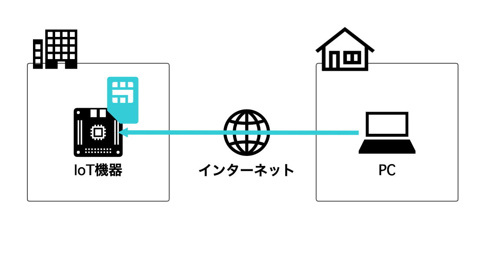
本レシピのゴール
- 遠隔地のIoT機器(Raspberry Pi)にSSH接続できるようになる
本レシピの所要想定時間と金額
- 想定所要時間: 約1時間
- 概算費用: 16,450円（設定用PC本体を除く）
※ 概算費用: ハードウェアや SORACOM を始めとした各種サービスの概ねの費用 (税や送料などの付帯費用や無料枠適用は考慮しないものとしています)
利用するソラコムサービス
サービス名 | 概要 |
IoT データ通信サービスです。 Raspberry Piと3G USBドングル AK-020でのセルラー通信を実現します。 | |
オンデマンド・リモートアクセスサービスです。 遠隔地のSORACOM Airを搭載したデバイスにセキュアにリモートアクセスするために利用します |
このコンテンツの進め方
ページの内容を読み、また作業を行ったら右下の［Next］を押して次のステップへ進みます。また、［Back］を使って戻ったり、左のナビゲーションメニューでもページの移動が可能です。
左上の［×］を押してコンテンツを終了することができます。また、ページを開きなおすことで再開できます。ページのアドレスはブラウザの［履歴］メニューを利用してください。
リモートアクセスとはその名の通り「通信を用いて、遠隔から現場の装置を制御する」ことになります。このリモートアクセスの仕組みは大きく分けて以下のように大別され、それぞれ課題があります。
- サーバ・クライアントに専用ソフトウェアをインストールする方式
- リモートアクセスするサーバとそれに接続するクライアントの両方に追加のソフトウェアをインストールする必要がある
- 外部サービスを経由する場合がある
- VPNを経由する方式
- VPNアプライアンスの管理コストが高い
- VPNクライアントのライセンス管理とクライアントのキッティングが必要
- VPNアプライアンスを常にインターネットに公開する必要がある
いずれの方式にもメリットとデメリットがあり、システム管理者には多くの負担が必要です。
SORACOM Napterとは？
SORACOM NapterはSORACOM IoT SIMに対してセキュアにリモートアクセスするサービスです。Napterを有効にすると期限付きの一時的なIPアドレスとポート番号が発行され、NapterはそこへのアクセスをSIMの指定ポート宛に転送します。サーバやクライアントへの追加のソフトウェアが不要なのでシンプルに導入でき、アクセス元IPアドレスの制限やアクセス監査ログ機能を備えるため企業での利用にも適しています。
SORACOM Airによるセルラー接続は遠隔地にインターネット接続回線がないケースにおいてもスピーディーに導入可能であり、遠隔メンテナンスのように不定期に利用するケースにおいては使った分だけ費用が発生する、SORACOM Airの従量課金モデルが非常に適しているとも言えます。
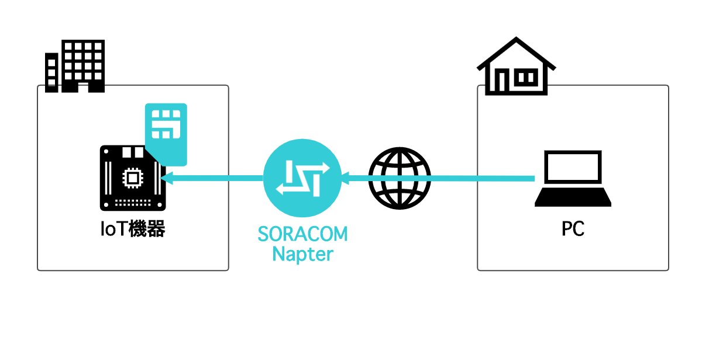
本レシピを行うために、以下のものをご用意ください。
ハードウェア
品名 | 数量 | 価格 | 購入先 | 備考 |
Raspberry Pi 4 Model B / 2GB | 1 | 約4,750円 | Raspberry Pi 3 モデルB+や搭載メモリサイズが異なるものでも同様です | |
ラズパイ4に最適なACアダプター 5.1V/3.0A USB Type-Cコネクタ出力 | 1 | 約1,300円 | 同等の他製品でも構いません | |
SORACOMスターターキット（3G USBドングル AK-020同梱） | 1 | 約5,700円 | キットの中には以下のものが含まれています。(それぞれを個別に準備しても構いません)
| |
microSD カード | 1 | 約1,500円 | ― | 16GB以上推奨 |
microSD カードリーダー | 1 | 約1,600円 | ― | microSD にパソコンから書き込めるようにするために必要です。(例: エレコム カードリーダー MR3-C008BK) |
有線 LAN (USB 型のアダプタ等形状問わず) | 1 | 約1,600円 | ― | パソコンと Raspberry Pi の通信に必要です。(例: BUFFALO 有線LANアダプター LUA4-U3-AGTE-NBK) |
パソコン | 1 | ― | ― |
|
有線 LAN ケーブル | 1 | ― | ― | パソコンと Raspberry Pi の通信に必要です。 |
※ 金額はレシピ作成当時のもので、税抜き・送料別です。
その他必要なもの
必要なもの | 費用 | 作成方法など |
SORACOM アカウント | 無料※ |
※ アカウント作成・維持自体の料金です。
SORACOMスターターキットに同梱されている SIM は、SORACOM に登録することで通信できるようになります。そのため、まずSORACOMスターターキット同梱されている SIM を SORACOM へ登録をしましょう。
※ すでに登録済み、もしくは登録済みの別の SIM を利用する場合は次へお進みください。
登録の方法は通販サイトやイベント等で入手した SIM を登録する (JP)をご覧ください。約5分で完了します。
登録が完了すると SIM 管理の一覧に表示されますので、確認ください。
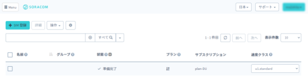
Raspberry Piを動作させるためには、パソコンでOSイメージをmicroSDに書き込み、それをRaspberry Piにセットします。OSイメージのダウンロードと書き込みには、無償で利用できるソフトウェア Raspberry Pi Imager が便利です。
Raspberry Pi Imager をダウンロードします。
Raspberry Pi のダウンロードページを開き、操作するパソコンの OS に合った Raspberry Pi Imager をダウンロードします。
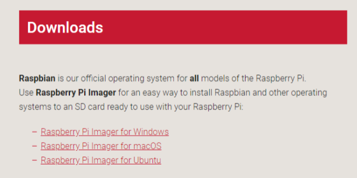
Raspberry Pi Imager をインストールします。
Windows の場合
ダウンロードした imager.exe を実行し、インストーラーの指示に従ってインストールを完了します。
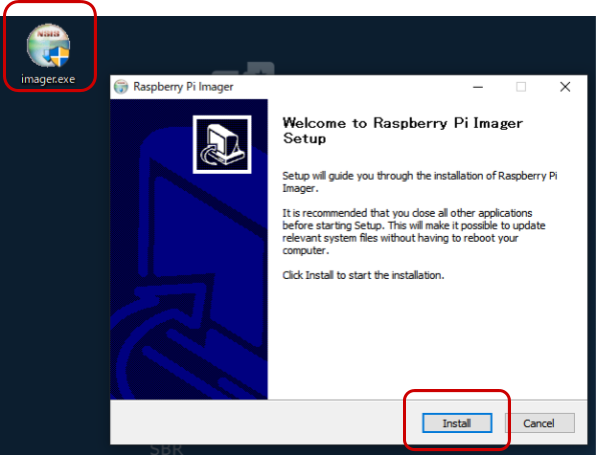
インストール完了時の "Run Raspberry Pi Imager" はチェックを外した状態で［Finish］をクリックします。
macOS の場合
ダウンロードした imager.dmg を実行し、 Raspberry Pi Imager を Applications (アプリケーション) フォルダへコピーします。
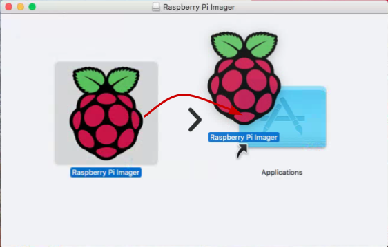
Raspberry Pi Imager を利用して OS イメージをダウンロードし microSD カードに書き込む
手順は動画をご覧ください。
注意点: STEP2 における Raspberry Pi Imager の起動の方法
Windows | ［スタートメニュー］> "Raspberry Pi Imager" |
macOS | ［Finder］>［アプリケーション フォルダ］> "Raspberry Pi Imager" |
標準のOSイメージを選択し、書き込みが完了したら microSD カードをカードリーダーから取り出してください。
書き込んだmicroSDの内容を編集し、 Raspberry Pi の起動時に Wi-Fi への接続と SSH サービスの待ち受けをするように設定を加えます。
ファイルの作成
以下二つのファイルをパソコンの任意のフォルダに作成します。テキストエディタで作成してください。
- wpa_supplicant.conf
- ssh
wpa_supplicant.conf
ctrl_interface=DIR=/var/run/wpa_supplicant GROUP=netdev
country=JP
update_config=1
network={
ssid="YOUR_WIFI_AP_SSID1"
psk="password1"
}
network={
ssid="YOUR_WIFI_AP_SSID2"
psk="password2"
}このファイルは Raspberry Pi の起動時に接続する Wi-Fi のアクセスポイントをあらかじめ書いておくことができます。 YOUR_WIFI_AP_SSID1 や password1 を皆さんのご家庭もしくは職場の環境に合わせて書き換えてください。
network={... の ssid= には SSID を、 psk= にはパスフレーズを書きます。
ssh
このファイルは「存在する事」が重要です。ファイルの中身は「空 (=0バイト)」にしてください。
二つのファイルを microSD の "boot" にコピーする
一度取り出した microSD を再度カードリーダーに取り付けます。boot と表示されたディスクが現れるのを確認してください。これが microSD の内容です。
その後、先ほどの 2 ファイル(wpa_supplicant.conf と ssh)を boot ディスクにコピーします。
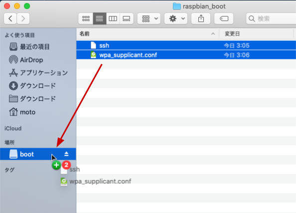
※画面は macOSですが、Windows も同様です。
コピーが完了したらパソコンでディスクの取り外し操作を行った後、 microSD を取り出してください。
Raspberry Pi の電源 ON
microSD を Raspberry Pi に取り付けます
少し残りますが奥までしっかりと刺さっていれば問題ありません。
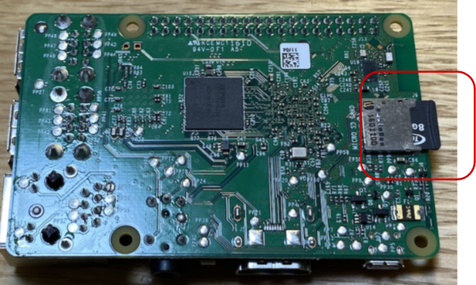
有線 LAN で Raspberry Pi とパソコンを接続
このあとのRaspberry Piの初期設定のために、Raspberry Pi の有線 LAN ポートとパソコンの有線 LAN ポートをケーブルで接続します。(Napterによるリモートアクセス時には不要です)
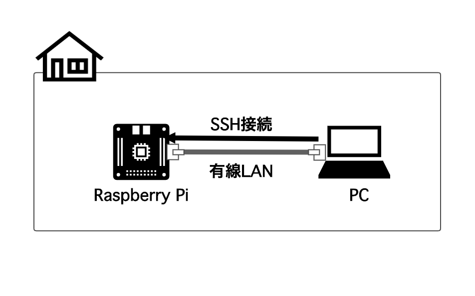
Raspberry Pi に ACアダプタを接続
USB-CポートにACアダプタのケーブルを挿すと、電源 ON となります。（電源スイッチはありません）
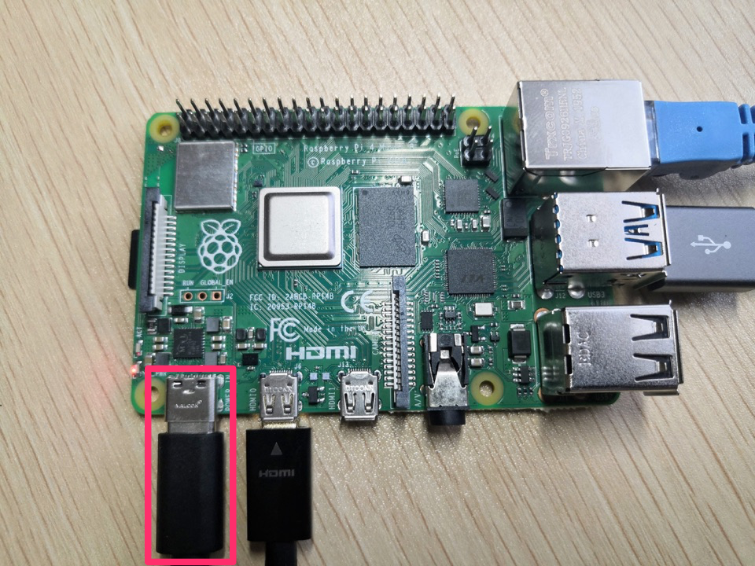
しばらく経過(約1~2分)すると macOS もしくは Windows 10 から Raspberry Pi へSSH接続出来るようになります。
SSH 接続の方法
Windows の場合
スタートメニューを右クリックして「コマンドプロンプト」を起動します。
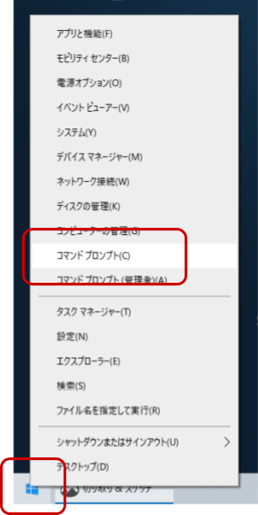
コマンドプロンプトで以下のように入力して ssh コマンドを実行し、接続します。
ssh pi@raspberrypi.localAre you sure you want to continue connecting (yes/no)?との問いには yes と入力します。pi@raspberrypi.local's password:との問いには、初期パスワードを入力しEnterキーを押下します(入力したパスワードは画面に表示されないことに注意します)。初期パスワードは Raspberry Pi OS のドキュメント に記載されていますので、それを利用してログインしてください。
macOS の場合
［Finder］>［アプリケーション］>［ユーティリティ］>［ターミナル］を起動します。
Terminal.app で以下のように入力して ssh コマンドを実行し、接続します。
ssh pi@raspberrypi.localAre you sure you want to continue connecting (yes/no)?との問いには yes と入力します。pi@raspberrypi.local's password:との問いには、初期パスワードを入力しEnterキーを押下します(入力したパスワードは画面に表示されないことに注意します)。初期パスワードは Raspberry Pi OS のドキュメント に記載されていますので、それを利用してログインしてください。
Raspberry Pi OS の最新化
以降は Windows、macOS 共通の作業です。
Raspberry Pi へ SSH 接続でログインしたあと、Raspberry Pi 側で以下を実行します。
sudo timedatectl set-timezone Asia/Tokyo
sudo apt update && sudo apt upgrade -y
sudo systemctl reboot最後の1行で再起動となります。しばらく待ったら、PCからRaspberry Piに再度SSH接続します。
Rapsberry PiからSORACOM Airによるインターネット接続を設定します。PCからコマンドを実行するために、Raspberry Pi へ SSH 接続していることを確認してください。以降は、特に断りを入れない場合は Raspberry Pi 側でコマンドを実行します。
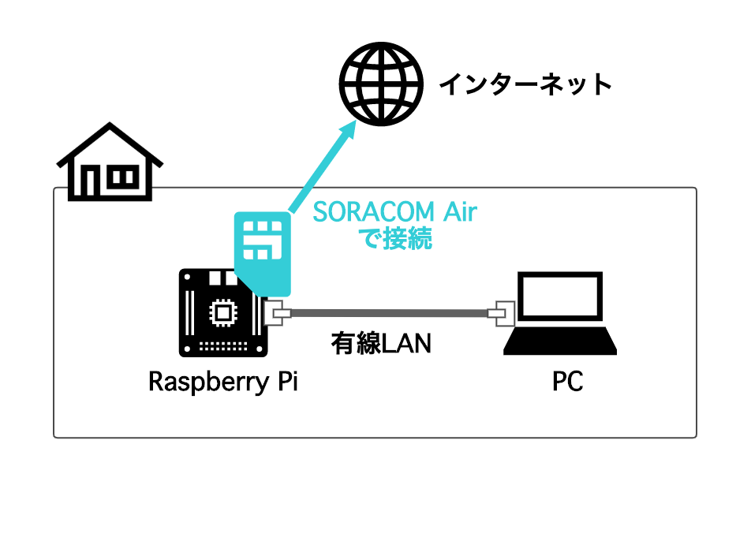
setup_air.sh の実行
USB ドングル型モデムで SORACOM Air によるインターネット接続の一連の設定を自動化する setup_air.sh をSORACOMユーザーサイトで公開しているので、これをダウンロードし、実行します。
Raspberry Pi へ SSH 接続をし、以下2つのコマンドを順に実行してください。
curl -O https://soracom-files.s3.amazonaws.com/setup_air.sh
sudo bash setup_air.shUSB ドングル型モデム (AK-020) に SIM を取り付け、Raspberry Pi に接続する
以下の図を参考に AK-020 に SIM カードを取り付け、Raspberry Piにセットしてください。

Raspberry Pi の USB ポートはどこでも構いませんが、有線LANポートと干渉しないようにしましょう。
接続を確認する
USB ドングル型モデムの LED を見ながら接続状態になったのを見計らって、以下を実行します。
ping -c 4 pong.soracom.ioこの時、期待される出力は以下の通りです。
PING pong.soracom.io (100.127.100.127) 56(84) bytes of data.
64 bytes from 100.127.100.127 (100.127.100.127): icmp_seq=1 ttl=64 time=75.6 ms
64 bytes from 100.127.100.127 (100.127.100.127): icmp_seq=2 ttl=64 time=58.8 ms
64 bytes from 100.127.100.127 (100.127.100.127): icmp_seq=3 ttl=64 time=55.4 ms
64 bytes from 100.127.100.127 (100.127.100.127): icmp_seq=4 ttl=64 time=43.4 msいよいよ、PCから遠隔地を想定したRaspberry Piへのリモートアクセスを試します。
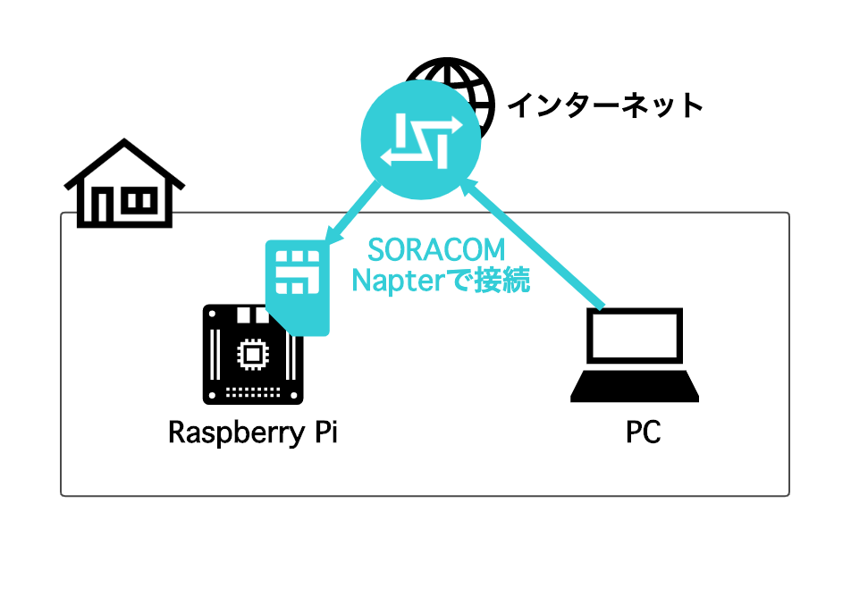
SORACOM Napterでのリモート接続設定
この作業は「リモートアクセス元のPC」で行います。
SORACOM ユーザーコンソールにログインし、SIMにチェックを入れて[操作] - [オンデマンドリモートアクセス] をクリックします。
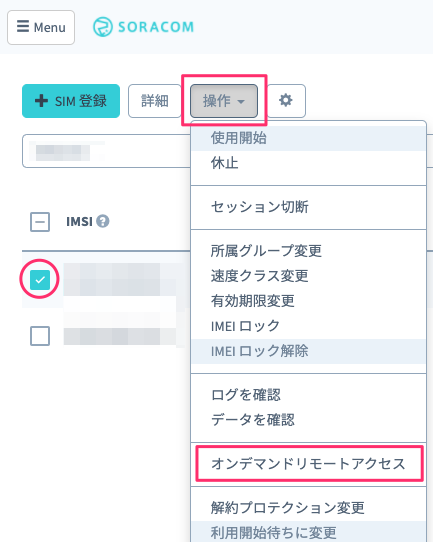
ダイアログの [デバイス側ポート番号] が「22」になっていることを確認し、「OK」ボタンをクリックします。
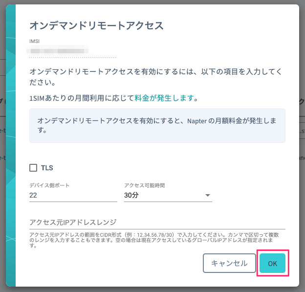
これでNapterが有効になり、アクセスするための一時的なホスト名/IPアドレスとポート番号が発行されました。[デバイスにアクセスするには(例)] の [SSH] にあるコマンドラインの文字列をコピーし、テキストエディタに貼り付けます。
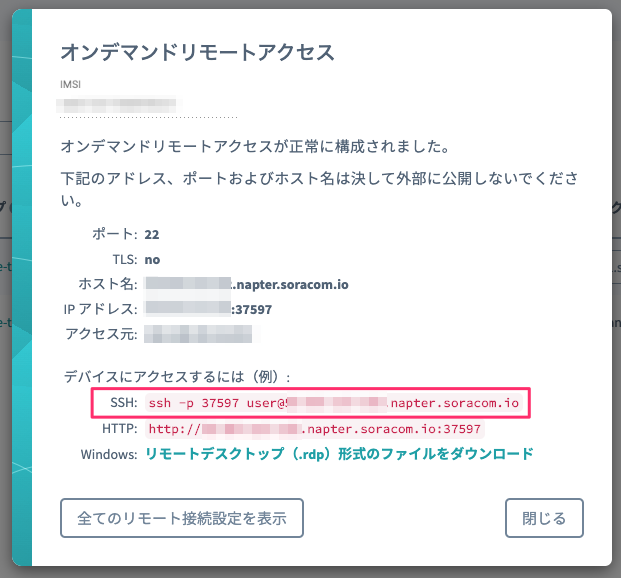
コマンドラインのうち、ユーザー名をRaspberry Piのユーザー名に書き換えましょう。
ssh -p XXXXX user@XX-XX-XX-XX.napter.soracom.io↓
ssh -p XXXXX pi@XX-XX-XX-XX.napter.soracom.ioコマンドプロンプトやTerminal.appにテキストエディタのコマンドライン文字列をコピー&ペーストし、Napter経由でもSSH接続できることを確認します。
ssh -p XXXXX pi@XX-XX-XX-XX.napter.soracom.ioAre you sure you want to continue connecting (yes/no)?との問いには yes と入力します。pi@XX-XX-XX-XX.napter.soracom.io's password:との問いには、初期パスワードを入力しEnterキーを押下します(入力したパスワードは画面に表示されないことに注意します)。初期パスワードは Raspberry Pi OS のドキュメント に記載されていますので、それを利用してログインしてください。
本レシピでは費用がかかるサービスを利用しています。
本項をよく読み、必要な操作や解除作業を行うようにして、想定外の費用が掛からないようにしてください。
費用について
ここで記載している金額は全て税別、送料別となります。
SORACOM プラットフォームの利用料金
サービス／機能 | 料金 |
(今回の利用であれば 100MB 以内で収まる範囲) | |
300円/月 |
※ 費用詳細はリンク先をご確認ください。
SORACOM Napter 設定の削除
SORACOM Napter の設定はアクセス可能時間の経過後自動で削除されます。
明示的に削除する手順はSORACOMユーザーサイトをご覧ください。
本レシピでは、Raspberry Piへの遠隔アクセスをSORACOM AirとSORACOM Napterで実現しました。NapterはSSH接続の他にも任意のTCP通信を扱うことができますので、SORACOMユーザーサイトの手順で紹介している様々なリモートアクセス通信にチャレンジしてみてください。